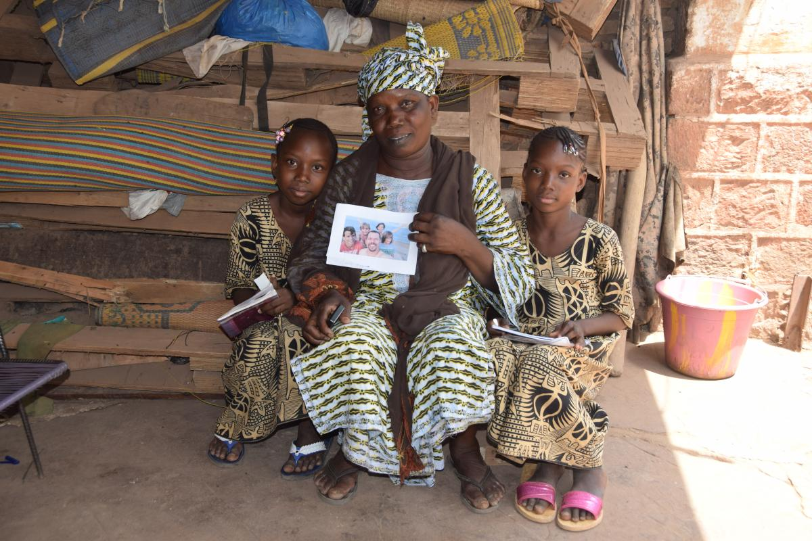
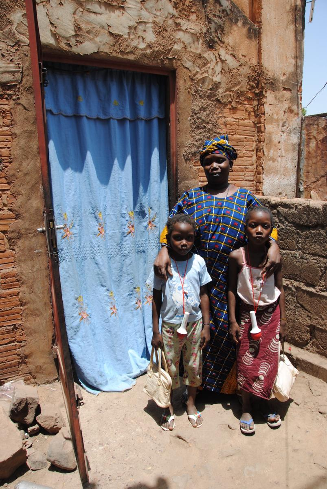
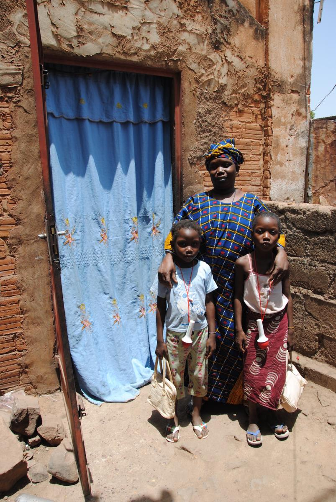

Hawa DIARRA

2014
2017
Született: 2007
A 2014-ben hétéves elsős kislány csonka, ötgyermekes családban él. Édesapja 2 éve halt meg hepaptitiszben, azóta az önkormányzat által egy lerobban téglaépületben biztosított piszkos lyukban élnek. Rokonaik vidéken élnek, édesanyjukat senki nem támogatja. A család férfitámasz nélkül maradt, mivel édesapja összes férfi testvére, aki a mali szokás szerint a férfi halála esetén átveszi a családfő szerepét, szintén meghalt. Az írástudatlan anya hagymát árul a piacon. A kislány az osztály harmadik legjobb tanulója, egy évvel fiatalabb testvérével jár egy osztályba. Füzetük, ceruzájuk nincs, apró krétatöredékkel írnak palatáblára, melyet kis ridikülökben hordanak az iskolába. Az udvaron főznek, vizet a kútról hordanak. Gyakran van olyan nap, amikor nem jut étel az asztalra, a tandíjat hónapok óta nem tudják fizetni.
 

Bővebb információért írjon az info@kozelafrikahoz.hu email címre.